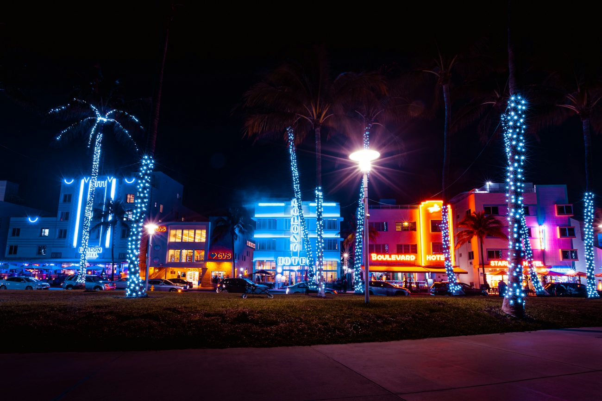
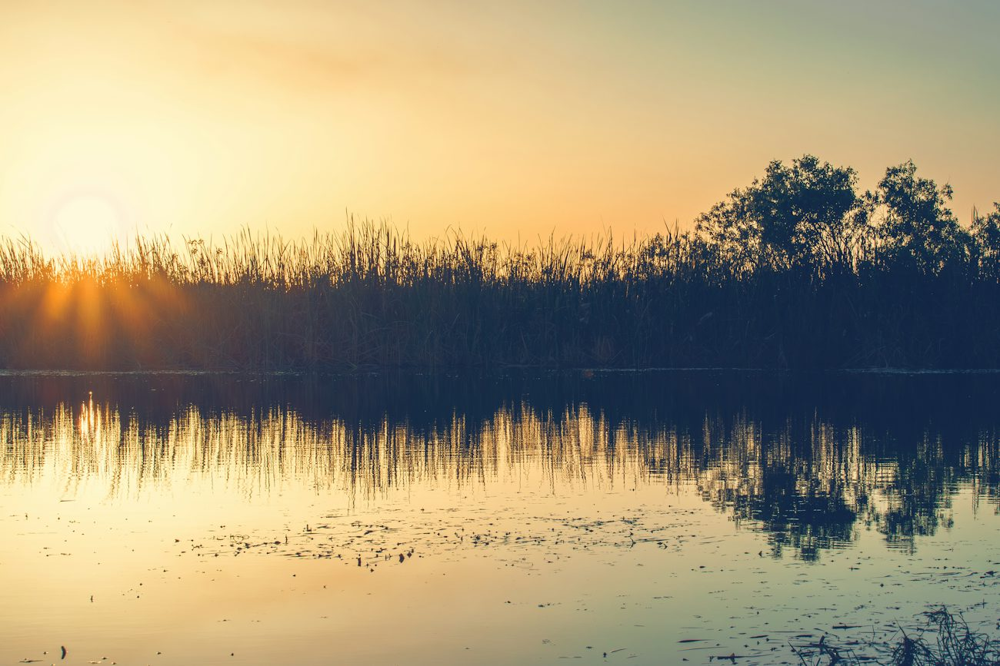

Grassrivers Is the Everglades: Seeing GTA 6's Swamp for Real
There is no serious alternative: the game's wetland region is the Everglades. Here is the official copy, the geography, and what the airboat ride is actually like.

The wetland region was named Grassrivers and described as "the untamable jewel of Leonida's crown", full of gators and mangroves and things that are "far deadlier". There is exactly one candidate for that description in the state, and it is the largest subtropical wilderness in the United States.
The official copy, in full
Heading: "Welcome to the Wetlands." Standfirst: "The untamable jewel of Leonida's crown." "You never know what lies beneath the surface of this primordial expanse. The gators may be the most famous attraction, but there are far deadlier predators and weirder discoveries among the mangroves."
One of the official image captions carries the only hard spatial fact in the entire description: a speedboat heading toward buildings on piers with the Vice City skyline visible in the distance. That establishes that the wetland region is close enough to the city to see it. It does not give a distance, and nobody else does either.
Why the Everglades and nothing else
- Scale. The Everglades is about 1.5 million acres. It is the only place in the country where you can stand on a paved road and see sawgrass running unbroken to the horizon in every direction.
- Wildlife. The alligator population is visible from a boat. That is not true of any other American wetland, and the game makes the gator its headline animal.
- Mangroves. The southern end of the park is a mangrove tunnel system where the water runs between the roots. The game's word is specifically "mangroves".
- Airboats. The game uses an airboat as the signature vehicle of the region, in Trailer 1, Trailer 2 and the Extended Look. An airboat is the standard way to move through the real Everglades, because the marsh is too shallow and too vegetated for a conventional hull.
- Position. It sits between the city and the Gulf, which is where the game puts it: southwest, on the coast.
The Everglades in three parts
| Section | What it is | What you get |
|---|---|---|
| Northern Everglades, near Everglades City | The deep sawgrass, mostly boat access | Birdlife, the best gator viewing by boat |
| Central, near Homestead | The part most visitors drive through | Airboat concessions, alligator programmes, the paved loop |
| Southern tip | Mangrove tunnel and the Gulf coast | Boat tours, the coast, the wildlife that lives in saltwater |
What an airboat ride is actually like
An airboat is a flat-bottomed aluminium hull with a propeller mounted high on a cage behind the engine, so the blades cannot touch the water or the vegetation. The driver stands at the back, steers with a rudder bar, and the ride is loud, fast and completely unlike a conventional boat.
The route is typically a loop out across the sawgrass, where the guide talks through what you are looking at, then back along a channel to the dock. It is 30 minutes on a standard ticket and it is the single most memorable half hour in South Florida, because there is no other way to cover that ground.
Wildlife is never guaranteed
Gators are wild animals in a very large place. A good guide will find them most days, particularly in the cooler months when they bask, but no operator can promise one, and any site that guarantees alligators is selling you a ticket rather than a sighting.
Timing, and what it costs you in daylight
The park is about 45 miles from Downtown Miami and roughly an hour and a half in traffic, which is the real constraint. An airboat tour takes half a day: the drive out, the ride, the boardwalk and viewing tower, and the drive back.
Two things are worth knowing. The wildlife is best in the winter, from December to March, when the gators are out and basking and the birdlife is heaviest. And Miami in November is at its most pleasant, which is exactly why a swamp drive is a good use of a launch-week morning rather than an afternoon.
The other wetland reference in the game
There is a second, smaller one worth knowing about: the Fuzzard Power Station, seen on the horizon in Trailer 1, which the community has matched to Turkey Point on Cape Canaveral, the decommissioned nuclear station whose cooling basins sit on the bay. It is a distinctive silhouette and a good example of a location matching that is about shape rather than architecture.
Where to go
Our Grasslands airboat tour shuttles you from Miami to the edge of the park, runs you on the water with a wildlife guide, and adds a boardwalk and viewing tower stop. It runs on set days each week and works for ages five and up, and it is the one route we run that does not start on Ocean Drive.
If you are building a GTA 6 launch trip, the most effective order is swamp first, city second. It is the same contrast the game is built on, and doing it in that order makes the neon land harder.
Frequently asked questions
Is Grassrivers the Everglades in GTA 6?
Yes. The official Grassrivers page describes gators, mangroves and a primordial wetland expanse, and the Everglades is the only wetland of that scale and character in Florida. It is the most confident regional match in the game.
How far is the Everglades from Miami?
About 45 miles from Downtown Miami, roughly 75 km and an hour and a half in traffic. Our airboat tour includes the shuttle from Miami, so the travel is handled for you.
Will I definitely see alligators?
No sighting is guaranteed, but they are the most commonly seen animal in the park and a good guide will usually find them. Winter is best, when they bask.
What does an Everglades airboat ride cost and last?
On our tour the airboat run is 30 minutes as part of a four-hour trip including the shuttle, the boardwalk and the viewing tower. The total is $79 per person.
Is the Fuzzard Power Station in GTA 6 the Turkey Point nuclear plant?
That is the strongest community identification for it, and it is based on the distinctive cooling-tower-and-basin silhouette on the bay rather than on any official statement. Turkey Point is an hour and a half up the coast from Miami.
Come and see it. Ride first.
Tell us your date and group size and we will confirm your spot before public booking opens, plus 20% off your first tour.
Reserve NowMore guides

GTA 6 Locations in Real Life: 24 Miami and Florida Places
2026-10-19 · 6 min read
GTA 6 Map: The Six Regions of Leonida and Where They Are
2026-10-17 · 5 min read
Everglades Airboat Tours from Miami: Timings and What You'll See
2026-10-11 · 4 min readMiami in 3 Days: A Locals' Itinerary
2026-10-10 · 5 min readUnofficial tours. Leonida Tours is an independent tour company. Our tours are not affiliated with, endorsed, sponsored or licensed by any game publisher or their affiliates. All game titles, characters, place names and trademarks belong to their respective owners and are used here only to describe the real-world locations that inspired them. Every stop on our tours is a real, publicly accessible place. Photography via Unsplash.